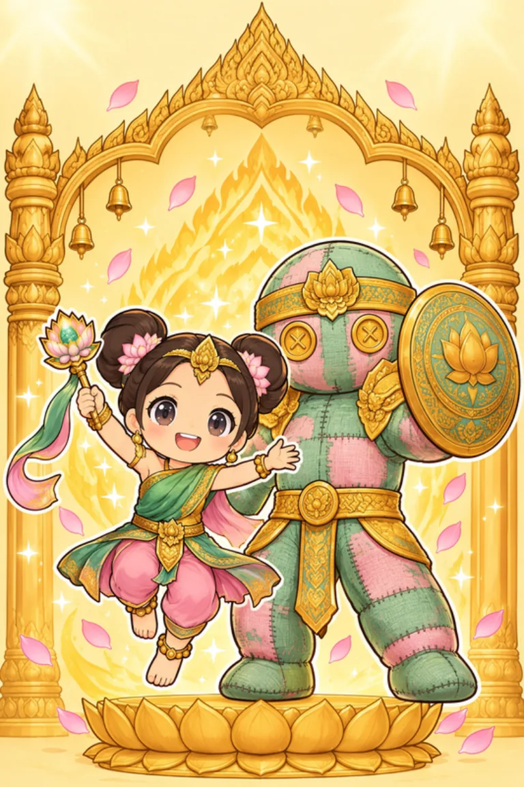
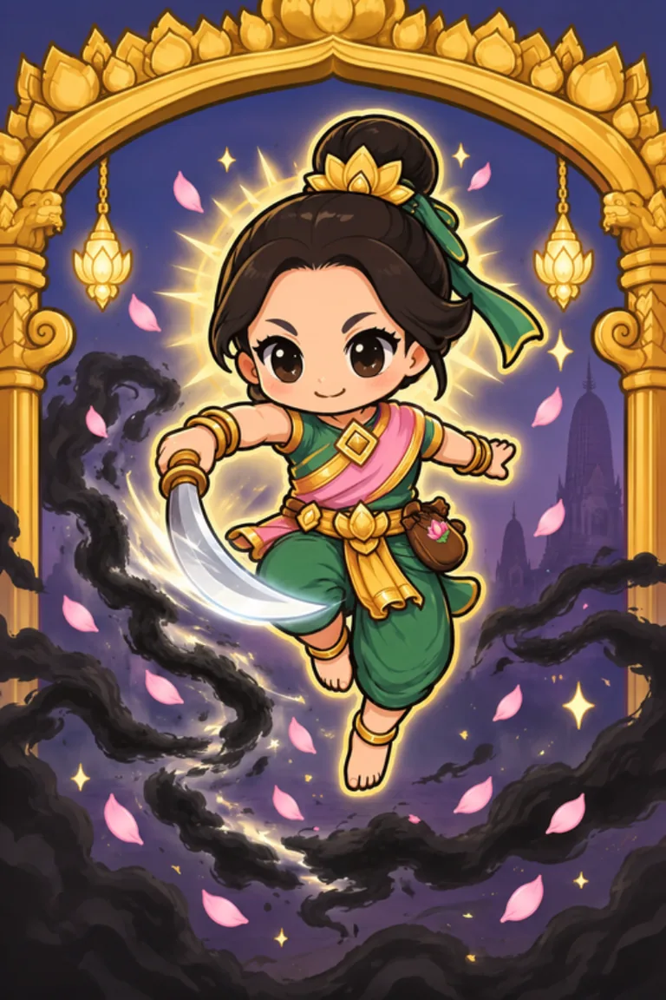
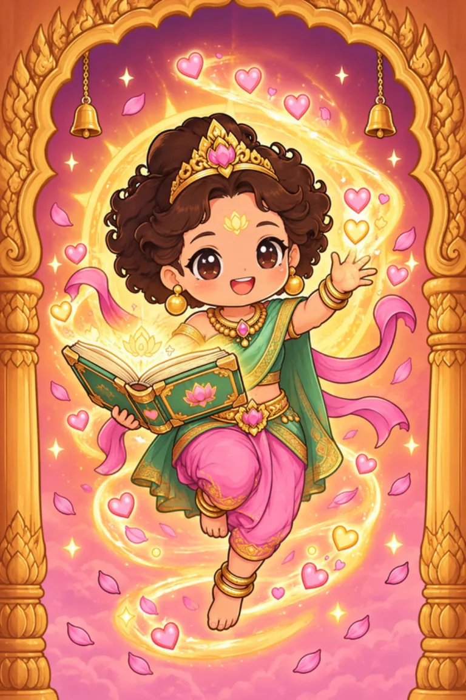

โปสเตอร์ A4 สำหรับติดหน้าบูธหรือจุดลงทะเบียน กด Ctrl+P (มือถือ: แชร์ › พิมพ์) เลือกกระดาษ A4 ปิด "หัวกระดาษและท้ายกระดาษ" และเปิด "กราฟิกพื้นหลัง" แล้วบันทึกเป็น PDF หรือสั่งพิมพ์ได้เลย
คณะแพทยศาสตร์ มหาวิทยาลัยขอนแก่น
ศึกทศเศียร · การ์ดผู้เยียวยาของคุณคือสาขาไหน?
ออกเดินทางกับกองทัพ ตอบ 16 คำถาม แล้วเปิดการ์ดที่เป็นตัวคุณ



✨ ลุ้นการ์ด Rare เรืองแสง! ✨
supharueksukda1996-prog.github.io/tosasian
#จบแล้วไปไหน